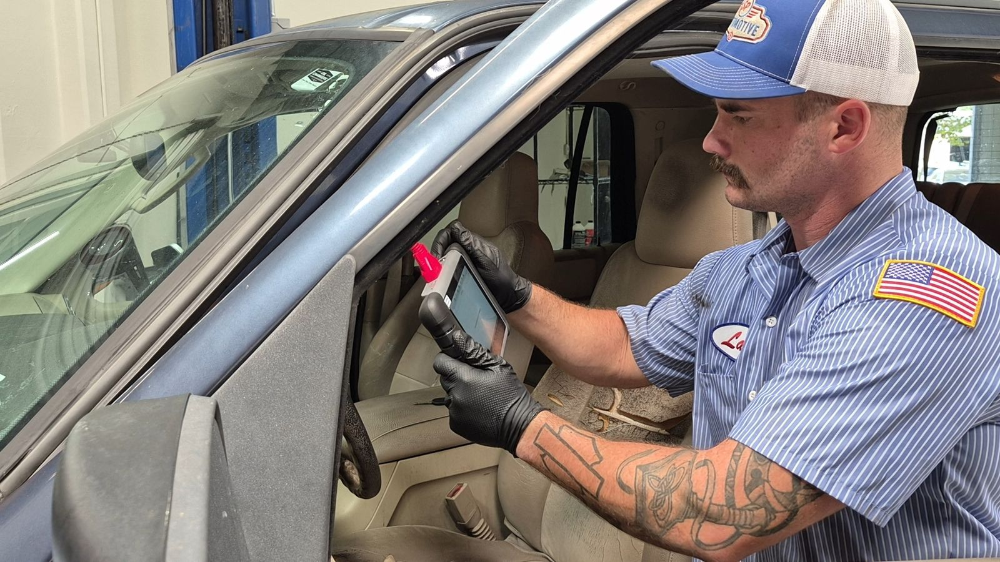
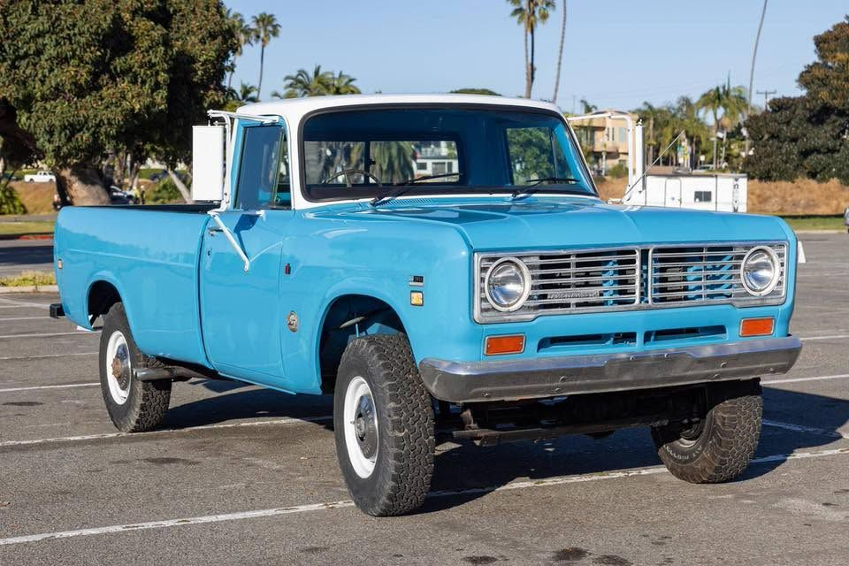

All makes, all models, all eras — oil changes, general repair, diagnostics, brakes, suspension, engine work, performance builds, classic restoration and commercial fleet maintenance under one roof in Miramar, San Diego.

The right oil for your engine — synthetic, high-mileage, diesel or high-zinc for classics — with a new filter, a fluid top-off and a full inspection with photos. Drop it off on the way to work and it’s done the same day.
Oil changes, fluid services, belts, filters, and scheduled maintenance — the routine work that keeps small problems from becoming expensive ones. We service all makes and models, from today’s daily drivers to well-loved older vehicles.

Modern vehicles are complex, but honest diagnosis shouldn’t be. We use up-to-date diagnostic equipment to pinpoint issues accurately, then walk you through exactly what we found and what it will take to fix it — no guesswork, no unnecessary repairs.

Pads, rotors, calipers, and brake lines inspected and serviced to factory or performance spec. Your safety on the road starts with brakes you can rely on every time you press the pedal.

Struts, shocks, control arms, alignment, and steering components — serviced to restore a smooth, confident ride and even tire wear, on both modern and classic platforms.

From a single worn component to a complete engine rebuild, we bring the same precision and care to every job — including carbureted engines that many modern shops no longer service.

For owners who want more out of their vehicle, we offer performance-minded upgrades — built with the same honest recommendations and attention to detail as every repair that leaves our shop.

Carbureted engines, vintage electrical systems, and the hands-on know-how that keeps older automobiles on the road. We particularly enjoy working with owners who want to preserve a classic rather than trade it in.

Priority scheduling, consolidated monthly invoicing and complete service records by VIN for contractors, route fleets and delivery operators in the Miramar, Sorrento Valley and Kearny Mesa business parks.
Give us a call and describe what’s going on — we’ll help you figure out the next step.